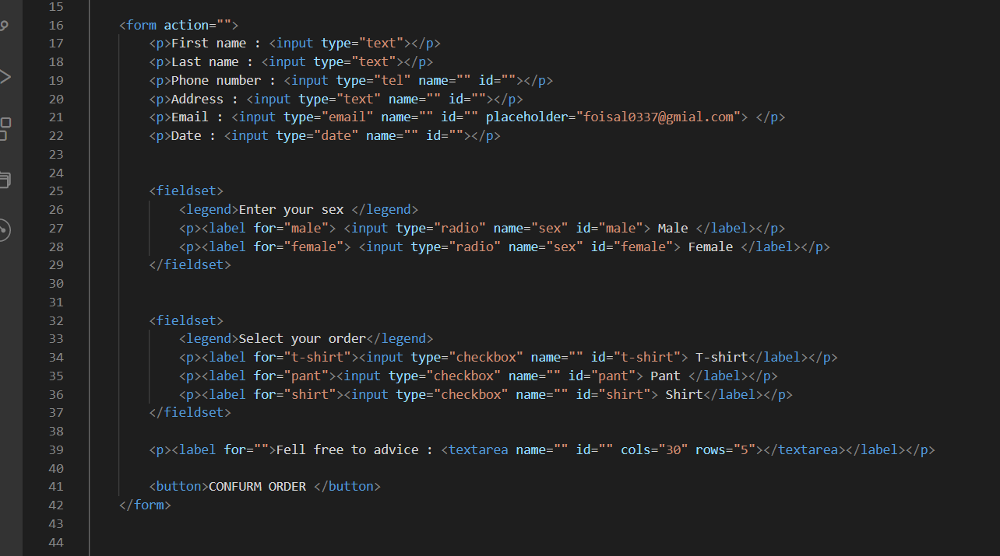
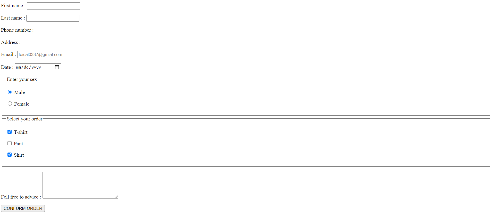
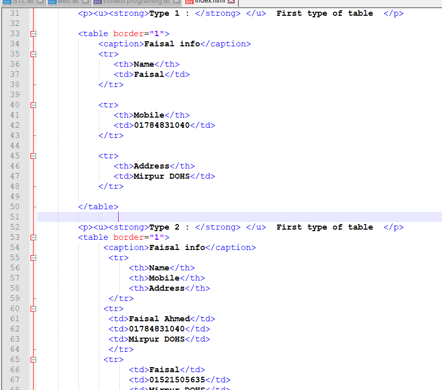
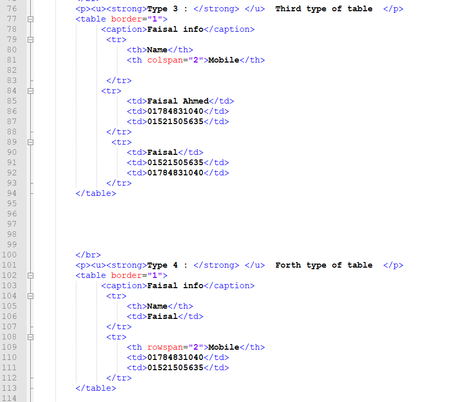
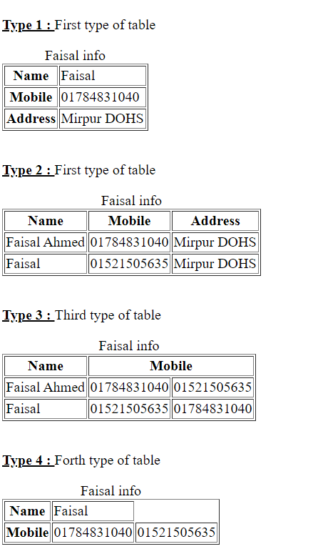

DAY-1 : HTML
- h tag --- h1 h2 h3 h4 h5 h6 .. h1 is beger and h6 is lower
- p tag
- anchore tag
- img tag
- ol ... li tag
- ul ... li tag
- strong tag
- b tag
- div ---
- section tag for section
- span --- spactial parpus say line gap na diye style kora jai .
DAY-2 : CSS
Type-1 : font and color : --
- color : ... text color .. normal,hex,rgb,rgba
- background-color : ... bg color
- font-color :
- font-size :
- font-family :
- font-weight : ... css a bold korthe use kora hoi.
Type-2 : height and width : --
- height : ... y axis borabor height bare chome, eta normally px unita hoi
- width: ... x axis borabor hoi,eta px and % unita hoi ... mainly image ae strol and image thik korte use kora hoi.
Type-3 : margin and pading : --
- margin : ... margin: 25px 50px 75px 100px(top margin is 25px , right margin is 50px , bottom margin is 75px , left margin is 100px) ...... margin: 25px 50px( top and bottom margins are 25px , right and left margins are 50px
- pading : ... pading : 25px 50px 75px 100px(top pading is 25px , right pading is 50px , bottom pading is 75px , left pading is 100px) ...... pading: 25px 50px( top and bottom pading are 25px , right and left pading are 50px
Type-4 : others : --
- border :
- border-radius :
- text-align : center .. justify (jokhon brouser er size sotho boro korbho tokhon nijai yii text justify kore nibe
- float: --- left (jothokhon porjontho na 100% height and width fhaka thakbe totkokhon block ghula aki liney bosthe thakbe )
- display: inline-block --- mane 100% width na hoya porjontho se gaph ye block push korthe thakbe
- display: block --- block er widthe thakleyo block ghula ghap puron korbe na je jekhane silo se sekhane thakbe
** id use kore akyi jinisher moddhe kichu jinish er unic boisistho likthe . id all time unic hoi . id akoi namer hote parbe na .
** class use korthe hoi akoi boishistho onkghula jinisher ar moddhe use korthe .
** style tag ye id hold korthe hoi # , class hold korthe hoi . , and baki tag ba anchor hold kora lage just tagther name likhe . >
** amra margin use kori kono akthi block ke opr theki niche ba nis theki oprye tulthe . margin use korle block ar size fixed thake btw block tha just sthan poriborthon kore .
** amra padding use kori kono aktha block ke borho kore dekthe . padding use korle opr er sthan tha fixed thake just nicher sthan tha bere jai .
DAY-3 : GIT
step-1 : Very first time in github : ---
- echo "# REPOSITORY NAME" >> README.md
- git init
- git add .
- git commit -m "first commit"
- git remoted and origin http://github.com/foisal0337/REPOSITORY NAME
- git push -u origin master
step-2 : after that any time we have to do just three steps : ---
- git add .
- git commit -m "adding "
- git push
step-3 : We working this github repository and we want to somthing pull in our destop : --
- git pull
step-4 : For creating brach :--
- git branch -- we can see which branch has now and how many
- git branch BRANCH NAME -- say "git branch devlop" means we create a devlop branch in github
- git branch -- we can see all branch and which branch we right now
- git checkout BRANCH NAME -- say "git checkout devlop" than branch swech master to devlop then we can write any code this will store in github devlop branch
- git add . -- after this we want to upload in develop branch
- git commit -m "creating develop branch"
- git push
step-5 : Now if we want to march in main master branch : --
- than we have to pull request
step-6: For publishing website : --
- we need to create a branch -- "git branch gh-pages"
- than go to seeting and get a link which is your page link
- again we change somthing than we have to pull request in master branch to gh-pages branch
step-7 : Importent command in git : --
- git diff
- Q -- for quite
DAY-4 : CSS EXTRA
Type-1 : pseudo class : --
- :hover{} --it create animation -- h:hover{} or .class:hover{}
- :focus{} -- for focusing mainly we use it in input text or another
- li:first-child{} -- entering ol first element is animater
- li:last-child{} --entering ol first element is animated
- li:nth-child(){} ---entering ol nth element is animated -- it can be normal number or (2n) or (2n+1) -- li:nth-child(3) or li:nth-child(2n) or li:nth-child(2n+1)
- a:visited{} -- when we get anchore link and we visited this link then this link color is less focus so we need to brighting this color whats why we need to use visited pseudoclass class like a:visited{color:blue}
Type-2 : pseudo element : --
- ::before{} -- somthing adding (like img, word or cotation) before content . like h1:: before{ content : pro;fornt-size: 10px ;}
- ::after{} -- somthing adding (like img, word or cotation) after content . like h1:: after{ content : pro;fornt-size: 10px ;}
- ::first-later{} -- if we want to bold or large or other animation in first later of a paragraph or hading than we use it .
- ::first-line{} -- if we want to bold or large or other animation in first line of a paragraph or hading than we use it .
Type-3 : position : --
- position : static -- In div , means block lavel element by defolt position has static
- position : relative -- In his main poistion's how many distance stay right now it can be left right top ... when we use relative than main position isn't remove or delete .. it has main position and also have new position too .
- position : absolute -- In his parents poistion's how many distance stay right now it can be left right top ... when we use absolute than main position is remove or delete .. so it hasn't stay main position just stay his new position . so main
position is delete and this position's come anothr div or other think .
- position : fixed -- it block is fixed ... if we strol or other thing work in this position it is fixrd ..mainly we use it in manu bar .
** pseudo class has only single cotation (:) and pseudo element has double cotation (::)
DAY-6 : HTML-Audio_Video_extra
- link:favicon and press enter button --> website ar favicon diya jai .
- audio --> we use it import audio btw for compliting use must contorls
- video --> we use it import audio btw for compliting use must contorls
- iframe --> mainly we use it import youtube video ... youtube ar share option we get ifram html code.
- form --> very very importent some tag input:text date tel number email , label , fieldset , input:checkbok for multipul selection , input:radio for only one selection , textarea , button


- table --> : it has tr -- table row , th -- table heading , td -- table data ,, rowspan == combine of row ,, colspan == commbine of colloum



DAY-7 : BOOTSTRAP 4
Component
- badge : we use it notification / profile bar .... badge badge-primary ..
- button : btn btn-primary for regular buttom and for animation type button we use it btn btn-outline-primmary
- card : lots of use
- carousel : lots of use
- collapse : hidden type ar paragraph show korar jonnno ,,, normally it has button and if we press it it show paragraph
- form :
- jamborton :
- modal :
- navbar :
- pagination : we use it for multipule pages like next page next pase
- popovers: we use it for IOS type button animation
- spinner : we use it for spinning like circle or others
- toast : it is massigning type animation mainly use it in image
Layout
- container : both left and right it take some amrgin
- container-fluid : no margin is taken display full sceen
- GRIDE SYSTEM --
Content
- display : it take 1,2,3,4 like display-1
- lead : almost every paragraph tag we use lead
- blockquote : eta ukti ar ketre use hoi
- pre : how to write it saw to output .. mainly we use it for poime
- code : for seeing output in window
- img : for most we use "img-fluid w-100 height: auto " and animation img-thumbnail rounded float-left/right
- table : somtime we see this
Utilits
- border : radius left right rounded rounded-pill
- text-primary : for text colouring
- bg-primary : for background clouring
- display : block -> use it for instand width break ... inline -> as long as width is not 100 it will not break ... inline-block -> same as display-block
- FLEX : most use it
- float : float left right ... use in text img
- overflow : hidden -> after height element will be hiden ... auto -> oposite of hidden
- shadow : we use for shadow it none sm lg
- text : justify use for justify texting